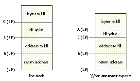

See if you can solve this programming puzzle, presented in the form of a dialog
between Konstantin Othmer and guest puzzler Josh Horwich. The dialog gives clues to
help you. Keep guessing until you're done; your score is the number to the left of the
clue that gave you the correct answer. Even if you never run into the particular
problems being solved here, you'll learn some valuable debugging techniques that will
help you solve your own programming conundrums. And please, make KON & BAL's day
by submitting a puzzle of your own to AppleLink DEVELOP.
Josh Hey, KON, where's BAL?
KON Hmmm. That's a good one. Have you checked all the usual places: his cube? the
fitness center? prison?
Josh No sign. He won't even return my calls.
KON Maybe his answering machine is on the fritz?
Josh Hold on! Finding BAL was not the puzzle I had in mind.
KON Well, I hope this is an easy one if I have to go it alone.
Josh It's right up your alley. Let's see if all that Sega programming has made you soft.
I have a Mac IIci with 8 MB of RAM, a late alpha version of System 7.5, QuickDraw GX
beta 3 . . .
KON Hold on, hold on! There's the problem! Swap hard drives with a machine that has
working system software, and your bug, whatever it is, goes away. While you're at it,
why don't you buy a Mac with a little more horsepower?
Josh Not so easy, KON. We're here to solve these problems, to "learn some valuable
debugging techniques," remember? Anyway, I'm printing from Deneba's Canvas to a
LaserWriter Pro 630. My machine gets a bus error while spooling a nasty sample
document consisting of a bunch of Ferrari F40s that Lance thoughtfully duplicated and
rotated in Canvas.
KON OK, let's isolate the offender here. What happens if you install GX beta 3 on the
IIci running System 7.1?
Josh The problem goes away; the document prints beautifully. You even get all those
cool GX printing features, like document redirection and printing extensions. Don't you
just love it?
KON It's great! I can't wait to install it. How about some more information about the
crash?
Josh What? You haven't figured it out yet? OK, I'll be nice, since BAL is hiding out.
Let's install a debugging version of the beta 3 GX Graphics INIT, and see what we can
find. I'll be even nicer and give you a version with MacsBug symbols.
KON So where's the crash?
100 Josh It looks like we don't crash in GX itself. MacsBug heap checks reveal nothing
amiss in any heap. But we crash in a CMP.W (A2), D0 instruction, with A2 looking
like garbage. What next?
KON How about a wh pc MacsBug command to see where we are?
90 Josh The PC is 1270 bytes into a locked, purgeable, relocatable block in the
system heap. The block even consists of legitimate code! It's about 16K long, if that's
any help to you. A stack crawl reveals no interesting MacsBug symbols, just to make
things even tastier.
KON OK, let's try to figure out who owns this block. Find the beginning of the block and
use dm to look around. Any clues?
Josh Nothing obvious, like the programmer's name and phone number. Only a few
cowboys like you would leave such a nice trail. I do notice some four-letter constants
near the top, like 'mach', 'fpu ', and 'qd ', but overall the block looks like a bunch of
680x0 opcodes, as one would expect.
KON All right, let's use il to look around the block and see if we can find any telltale
traps. Maybe from there we can guess what sort of code this is, or even who owns it.
80 Josh Besides the smattering of Gestalts, HLocks, HUnlocks, and GetTrapAddress
traps, I notice a _ComponentDispatch and a _SetComponentInstanceStorage call.
Overall, this code has very few traps, and lots of computational code.
KON I was told there would be no math! This code sounds like a Component
Manager-based code resource that went amuck. Given that we're dealing with printing
from GX, I'd guess it's ColorSync and not QuickTime. Let's be skanky and see how we got
into this wonderful code. Move the PC to the end of the function, and step us out of here.
What do we find?
70 Josh Getting warmer! After walking our way out of here in MacsBug by placing the
PC near the end of each function and tracing over the UNLK A6 and RTS instructions,
we discover that we are in fact inside a component called by ColorSync! Continuing to
step out in this fashion reveals that the trap that was called was _ColorMatch. Didn't
you write some of the slime we're looking at now?
KON Nothing doing. It's clearly a GX bug, just like the one from the last Puzzle Page.
You GX people like to pawn off your problems on everyone else. What else can you tell
me?
60 Josh OK, since I wrote much of the lovely code that has GX calling ColorSync, I'll
even lend a hand. Let's restart and do an atb ColorMatch and see what happens. After
setting this up, we discover that GX calls ColorSync to convert some colors from RGB
to CMYK. The data it passes to CWNewColorWorld looks fine -- it's merely the 14-
inch Macintosh Color Display color profile. ColorSync returns noErr, and we later
crash when we actually try to match a color using CWMatchColors.
KON What version of ColorSync are you running?
50 Josh 1.0.4. It's the one where the code that actually does color matching has been
brought native for PowerPC. The folks over in Imaging told me that all they did was
massage the code slightly to compile for PowerPC. I hear those IBM compilers are a
little stricter than THINK C when it comes to ANSI compliance.
KON Does it work with 1.0.3?
Josh Yep.
KON Hmmm. So what you're saying is we're crashing in ColorSync when printing
under GX and System 7.5 to the LaserWriter from Canvas, but it works fine in System
7.1. I'd love to blame the whole thing on 7.5 and call it a day, but the code that dies
only makes very standard system calls, which factors the 7.5 code out of the equation.
And ColorSync 1.0.3 works. So the problem seems to be with ColorSync 1.0.4. Any
other changes for 1.0.4?
40 Josh Since GX relies on ColorSync, we need to know whether it's installed before
we install GX and patch out all of the Printing Manager. System 7 loads extensions
before INITs in control panels, so I talked the ColorSync guys into making the INIT part
of ColorSync live in a separate extension file from the profile picker, which remains
in the control panel. Cool, huh?
KON Wonderful. Now the user has twice the chance of throwing the darn thing away,
right after getting rid of A/ROSE and DAL. I guess it would be too hard to solve that
problem right, and search the Control Panels folder for ColorSync and determine
whether or not it's going to load. Now you've created another weird, order-dependent
nightmare on the Macintosh. It should give you job security, if nothing else.
Josh Good point, KON. I suppose GX should be clairvoyant and know that ColorSync will
load just because it's in the Control Panels folder. Next thing you know, those
extension-disabling utilities would be patching the File Manager so that GX's INIT code
doesn't find ColorSync when the user disables it.
KON All right, all right. So what does the crashing code look like it's trying to do?
Where did this horrible A2 value come from?
35 Josh ColorSync gets this value out of the middle of a relocatable block in
MultiFinder temp memory. From the disassembly, my guess is that it's doing a lookup
in a hash table of some form.
KON Ah, yes. To speed things up, the matching code remembers recent colors. This way
we can avoid a whole lot of math. But why would the block be in MultiFinder temp
memory? When ColorSync allocates memory, it first tries the current heap and
system heap, and only if there's not enough space in either of those does it allocate the
block in MultiFinder temp memory. This seems to imply that you're low on memory.
30 Josh Well, it's just the system heap that's low. Because GX Graphics doesn't want to
move application heap memory, it sets the current heap to the system heap before
calling ColorSync.
KON It's no surprise that you're low on memory. You have all that System 7.5 garbage
floating around in your machine. Tell me more about that block it got the erroneous
pointer from.
25 Josh It's 10,054 bytes big, and from the look of things, it's full of trash. I wonder
who's ruining it?
KON Let's see. When GX calls CWNewCWorld, ColorSync sets up some memory. Reboot
and break on _ColorMatch; once we hit that, break on TempNewHandle. After the
TempNewHandle, let's step-spy to see who trashes the location. As long as the block
doesn't move, we should find out who's ruining our hash table.
20 Josh A step-spy on a location in a relocatable block? I've got good news and bad
news. The good news is that the block doesn't relocate between the allocation and the
crash, so the step-spy trick is valid. The bad news is that the step-spy doesn't catch
anyone trashing our location.
KON Wait! The location isn't touched at all ? As in "uninitialized"? How can that be?
Right after calling TempNewHandle, I clear out the entire block to 0. What happened
here?
15 Josh You're getting warmer! Here's a listing of the code right after
TempNewHandle:
MOVE.L D7,-(A7) CLR.L -(A7) MOVE.L (A3),-(A7) JSR *-$3B70
KON That looks right. Let's step into the JSR and see what happens.
10 Josh It looks like a simple routine. In fact, it's right out of Symantec's ANSI
library:
MOVE.L $0004(A7),D0 MOVEA.L D0,A0 MOVE.B $0009(A7),D1 MOVE.L $000A(A7),D2 BRA.S *+$0006 MOVE.B D1,(A0)+ SUBQ.L #$1,D2 BNE.S *-$0004 RTS
Single-stepping through here reveals that nothing really happens at all. It loads D0
with a pointer to our block, D1 gets 0, and D2 gets 0. It branches to the BNE; then the
BNE doesn't loop. Whoops! I bet you wanted to clear a few more bytes than that! KON
How did we end up there? I never even linked with the ANSI libraries back in the 1.0
days! And how did someone screw this up? Let's call up Symantec and scream at them
for a while.
5 Josh Not so fast! Let's look at the prototype for memset. It can be found in string.h
in the C headers folder somewhere deep in the Symantec C++ folder hierarchy. It reads
like this:
void *memset(void *, int, size_t);
It looks like ColorSync thinks that the int is 4 bytes long! After pushing things on the
stack, what we've got is what you see on the left here, but memset expects the stack
to look like what you see on the right. What's wrong with this picture?

KON Of course! The THINK ANSI library comes with the "4-byte ints" option disabled.
When taking the matching code native, someone must have decided to make the 680x0
build look as much like the PowerPC build as possible and turned "4-byte ints" on, but
didn't rebuild the libraries linked with the code. How does ColorSync 1.0.4 ever work
at all on a 680x0 Mac?
Josh Good question, KON! Looking around the TempNewHandle call, we see that
ColorSync allocates a handle in one of three ways: with NewHandleClear, with
NewHandleSysClear, or with TempNewHandle followed by the call to memset. It's
being kind by preflighting its memory allocations and choosing a heap only if the
allocation would leave at least 32K free afterward. GX is an unknowing partner in
crime: it sets the current heap to the system heap before calling ColorSync so that it
doesn't inadvertently cause relocatable blocks to be purged or relocated across a GX
Graphics call.
KON Rebuilding THINK's ANSI library with 4-byte ints enabled will solve the
problem. So how come printing succeeded under System 7.1?
Josh When we printed under 7.5, which had every INIT ever written for the Macintosh
installed, and a few MS-DOS TSRs thrown in as well, the system heap was pretty full,
so ColorSync tried to allocate the handle in temp memory, using TempNewHandle and
memset. Crash! Under 7.1, there was lots of system heap space, so ColorSync would
just call NewHandleClear and everything would work fine.
KON Nasty.
Josh Yeah.
SCORING
Josh HORWICH (Internet josh@catapent.com) had the rare pleasure of running
across this particular bug during the two years he spent on the QuickDraw GX Graphics
team at Apple. Now he's working at Catapult Entertainment, Inc., a Cupertino-based
company developing what KON affectionately calls a "modem" for home video game
consoles. Between Slurpee runs to the 7-11 convenience store and games of pinball,
Josh can occasionally be found in front of a logic analyzer, watching a single bit ruin
his whole day. *
Thanks to Luke Alexander, Tom Dowdy,
KON (Konstantin Othmer), and BAL (Bruce Leak) for reviewing this column. *